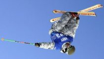
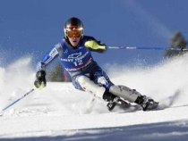
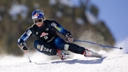
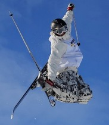
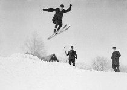
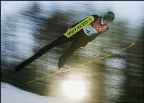

Лыжный спорт
Лыжный спорт - это олимпийский вид спорта, включающий в себя несколько дисциплин. Лыжный спорт включает в себя: лыжные гонки, а также прыжки с трамплина, лыжное двоеборье и горнолыжный спорт.
Лыжный спорт в нашей стране начал развиваться в самом конце девятнадцатого века. Такое позднее начало развития лыжного спорта в России обусловило неспособность наших лыжников первоначально на равных противостоять спортсменам из Скандинавии. К тому же лыжный спорт в нашей стране в то время существовал больше как развлечение.

Соревнования по лыжному спорту в нашей стране в дореволюционный период проводились лишь на равнинах. Спортсмены пользовались очень длинными (до трех с половиной метров) лыжами, а также палками выше человеческого роста. Крепления, а также обувь были мягкие. Главным образом, инвентарь для лыжного спорта привозился и из соседней Финляндии, а также Швеции. Специализированные лыжные мази стали использоваться лишь в 1913 году.
В последующие годы стал намечаться явный сдвиг в сторону распространения лыжного спорта среди населения. Росло число участников соревнований. Та же тенденция продолжилась и после Октябрьской революции - в итоге, в настоящее время мы имеем одну из лучших в мире сборных по лыжному спорту.
Горнолыжный спорт
Горнолыжный спорт, одна из составляющих лыжного спорта — представляет собой спуск с гор на лыжах по специальным трассам и объединяет такие спортивные дисциплины, как слалом, гигантский слалом, супергигантский слалом, скоростной спуск (отличаются друг от друга протяженностью трасс, перепадом высот между стартом и финишем, количеством ворот, через которые должен пройти спортсмен на дистанции), а также горнолыжное двоеборье (его официальное наименование — альпийская комбинация), включающее в себя слалом и скоростной спуск. Входит в состав Международной федерации лыжного спорта (ФИС) с 1924.
Программа соревнований на зимних Олимпийских играх постоянно изменялась: в 1936 первые соревнования включали скоростной спуск и слалом (альпийское двоеборье) с 1948 — скоростной спуск, слалом, альпийское двоеборье с 1952 — скоростной спуск, слалом и гигантский слалом с 1988 — скоростной спуск, слалом, гигантский слалом, альпийское двоеборье, супергигантский слалом.
Во время спуска с гор спортсмены должны преодолеть специальные трассы, размеченные воротами и флажками. Результаты определяются по сумме времени, показанного в двух попытках на различных трассах — в слаломе и в одной попытке — по другим дисциплинам.
Длина трассы в слаломе — 450-500 м, число ворот для мужчин — 60-75, для женщин — 50-55, перепад высот — около 200 м. Длина трассы скоростного спуска у мужчин — максимум 3800 м, минимум — 2435 м, число контрольных ворот — 11-25, перепад высот — 710-950 м в слаломе — соответственно 450-750, 33-92, 169-251 м в гигантском слаломе — 1034-2660, 56-75, 402-623 м.
Каждая страна может быть представлена 14 спортсменами (не более 8 человек одного пола), а также не более чем 4 участниками в каждой дисциплине горнолыжного спорта. Отбор для участия в зимних Олимпийских играх осуществляется по результатам выступления спортсменов в чемпионатах мира и этапах Кубка мира.
Прыжки с трамплина
Прыжки с трамплина (англ. ski jumping) — вид спорта, включающий прыжки на лыжах со специально оборудованных трамплинов.
Выступают как самостоятельный вид спорта, а так же входят в программу лыжного двоеборья. Входят в состав Международной федерации лыжного спорта.
История

Этот вид спорта зародился в Норвегии, где был распространен народный обычай состязаться в искусстве катания с гор (слалом). Вначале прыжки были частью слалома. Позднее среди лыжников выделились «горняки», увлекавшиеся преимущественно катанием с гор. Вначале прыгали с довольно высоких, расположенных на горных склонах, естественных уступов, позже — со специально возводимых возвышений, бугров. Причём, если раньше прыгуны приземлялись на ровное место, то потом гору приземления стали делать наклонной. Длина полета не измерялась, важно было взлететь как можно выше.
Родиной прыжков считается горная провинция Норвегии Телемарк. Уже в 1840 там имелись специальные места для прыжков на лыжах и проводились соревнования. Официальная регистрация дальности прыжков началась в 1868, первый зарегистрированный результат — 19 м. Вначале соревнования проводились не регулярно, результаты росли медленно. С 1906 лыжники начали проводить «горнолыжные» состязания, заключавшиеся в спусках с гор на скорость и гонках по пересеченной местности. В программы этих состязаний впоследствии стали включаться повороты и прыжки с небольших трамплинов. Постепенно, в результате более узкой специализации, выделилось несколько самостоятельных видов лыжного спорта — гонки, слалом и прыжки на лыжах с трамплина. Впоследствии прыжки и гонки в Норвегии вытеснил слалом. Прыжки с трамплина стали развиваться как самостоятельный вид лыжного спорта.
Зимним Олимпийским играм и первенствам мира по лыжному спорту предшествовали (с 1901) международные соревнования — Северные игры. Международная лыжная федерация (ФИС) с 1920-х гг. начала проводить всемирные соревнования по всем видам лыжного спорта, включая состязания по прыжкам с трамплина.
С 1924 Международный олимпийский комитет стал проводить Зимние Олимпийские игры. В программе первых Зимних Олимпийских игр в Шамони (1924) были включены прыжки с 70 метрового трамплина, с 1964 — с 70 и 90 метрового трамплина. Участвуют только мужчины. С 1992 личные соревнования проводятся на трамплинах 90 м и 120 м, командные — на трамплине 120 м.
В 1925 в Чехословакии состоялся первый чемпионат мира по лыжным видам спорта. В 1929 ФИС, посчитав, что разрыв в 4 года между очередными Олимпийскими играми большой, принял решение ежегодно разыгрывать первенства мира по всем видам лыжного спорта. С 1950 первенства по гонкам, двоеборью и прыжкам стали проводиться один раз в 4 года, между Олимпийскими играми, а с 1982 - раз в два года.
С 1945 прыжки стали оценивать не только по длине от стола отрыва до места приземления, но также по красоте и правильности выполнения требований к физической подготовленности прыгунов, совершенной координации движений, динамическому равновесию, владению своим телом во время полетов, технике приземления.
Лыжные гонки
Лыжные гонки — гонки на лыжах на определённую дистанцию среди лиц определённой категории (возрастной, половой и т. д.).
Классический стиль.
К изначальному, "классическому стилю" относятся те виды передвижения, при которых практически всю дистанцию лыжник проходит по предварительно подготовленной лыжне, состоящей из двух параллельных линий. "Классические" лыжные ходы разделяют по способу отталкивания палками на попеременные и одновременные. По числу шагов в одном цикле выделяют двухшажный, четырехшажный и бесшажный ходы.
Наиболее распространены попеременный двухшажный ход (применяется на равнинных участках и отлогих склонах (до 2°), а при очень хорошем скольжении — и на подъемах средней крутизны (до 5°)) и одновременный одношажный ход (применяется на равнинных участках, на отлогих подъемах при хорошем скольжении, а также на уклонах при удовлетворительном скольжении).
Свободный стиль.
"Свободный стиль" подразумевает, что лыжник сам волен выбирать способ передвижения по дистанции, но поскольку "классический" ход уступает в скорости "коньковому", "свободный стиль" является, по сути, синонимом "конькового хода". Коньковые способы передвижения широко используются с 1981 г., когда финский лыжник Паули Сиитонен, которому тогда было уже за 40, впервые применил его в соревнованиях (в гонке на 55 км) и выиграл.
Наиболее распространены одновременный двухшажный коньковый ход (применяется как на равнинных участках, так и на подъёмах малой и средней крутизны) и одновременный одношажный коньковый ход (применяется при стартовом разгоне, на любых равнинах и пологих участках дистанции, а также на подъёмах до 10-12°).

{kind=link}
{kind=link}
{kind=link}
{kind=link}
{kind=link}
{kind=link}